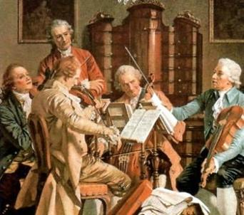

ACTIVIDAD 1
Se inicia la sesión con un texto motivador que de manera sorpresiva y didáctica les aporte conocimientos sobre la música en el Clasicismo, eje vertebrador de nuestra unidad y que además refuerce los conocimientos aprendidos previamente referentes a los periodos anteriores y que ayudan a entender el crecimiento y evolución de la música a través de la Historia, los cimientos sobre los que la música ha llegado a convertirse en el aspecto cultural más importante de nuestra vida y cómo el nacimiento de lo Polifonía en el s. XII contribuyó a tal efecto.
Duración de la actividad: 25 min
ACTIVIDAD 2
¡¡¡Una imagen como centro del conocimiento!!!

¿Qué ves aquí? ¿Cómo crees que eran las fiestas en el s.XVIII? ¿Cómo eran capaces de divertirse si no tenían ordenadores ni altavoces para amenizar sus fiestas?
Mediante la imagen vamos a generar una especie de debate en la que el alumnado conozca e indague la forma de vivir durante un periodo clave de la Historia de la Música como fue el Clasicismo y comprenda que no todo se conseguía a golpe de "click".
Duración de la actividad: 30 min